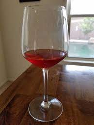

Spiced Wine

Description
Conditum Paradoxum, also known as spiced wine, was a popular beverage to consume during the roman holiday Saturnalia. It was valued enough to be included in one of the oldest cookbooks in human history: the Apicius. This cookbook is what is going to be used as a reference in the creation of this ancient drink. The combination of ingredients should result in a gold full bodied color with a sweet honey taste, with a scent of ginger and pepper.
Ingredients
To make spiced wine at home, you will need:
- 750 ml of white wine
- 1 date fruit
- 1 tsp of black pepper
- 1 cup of honey
- 1/2 tsp of fennel seeds
- 2 bay leaves
- a pinch of saffron
Extra Items
- Pitcher
- Saucepan
- Fine Strainer
- Coffee Filter
Steps
Follow along to create your own spiced wine:
- Place the date fruit, only 75 ml of wine, and the cup of honey into a suacepan
- Boil the content of the saucepan, making sure the honey dissolves while avoiding excessive bubbling
- Once the mixture is boiling, lower the temp to a simmer while adding the rest of the ingredients
- Place a coveirng on the pan, letting the content simmer for around 10 minutes
- Use the strainer and coffe filter to strain the mixture into a pitcher
- If any pieces of spice remain, pour back into the saucepan and re-strain (you may do this multiple times)
- Add the remaining 675 ml of wine to the pitcher
- Stir
- Place the wine in any container
- Place wine in your fridge, and allow it to cool
Voila, spiced wine. Enjoy, but drink responsibly!
Recipe based on:
Original Article